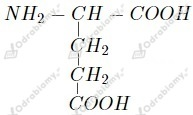
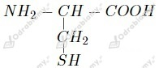
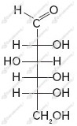

a) wysalanie - jest to odwracalny proces koagulacji białka pod wpływem soli metali lekkich;
b) denaturacja - jest to nieodwracalny proces ścinania białka pod wpływem soli metali ciężkich, wysokiej temperatury, stężonych roztworów kwasów i zasad, a także m.in. metanolu, czy metanalu;
Denaturacja jest procesem nieodwracalnym, ponieważ dochodzi do do rozerwania wiązań wodorowych, disulfidowych oraz jonowych stabilizujących strukturę białka, a zatem zostaje ona trwale zniszczona.
Po dodaniu wody destylowanej, zmiany cofną się w probówce 2, zaś w probówce 1 białko uległo denaturacji. Jest to spowodowany tym, że w probówce 2 na białko działa sól metalu lekkiego (sodu), a w probówce 1 ciężkiego (miedzi).
Przeprowadzona próba to reakcja ksantoproteinowa . Widoczną zmianą jest pojawienie się żółtego zabarwienia na twarogu. Świadczy to o obecności aminokwasów aromatycznych w białkach budujących twaróg.
Fioletowy roztwór powstanie w probówce pierwszej. Przeprowadzona próba to reakcja biuretowa.
Do wykrycia aminokwasów aromatycznych służy próba ksantoproteinowa, zaś do wykrycia wiązań peptydowych - próba biuretowa.
a) przykład aminokwasu tworzącego wiązania wodorowe:

b) przykład aminokwasu tworzącego wiązania disiarczkowe:

a)
b)
c)
Wzór Fischera:

Nazwa:
glukoza
Wzór ogólny monosacharydów to Cn(H2O)m gdzie n=m. Możemy go zatem zapisać jako Cn(H2O)n.
Masa molowa węgla to 12 g/mol, zaś masa molowa cząsteczek wody to 18 g/mol.
Liczymy wartość indeksu n:
Podstawiamy to do wzoru ogólnego i otrzymujemy C5(H2O)5.
Po przekształceniu otrzymujemy wzór rzeczywisty tego monosacharydu